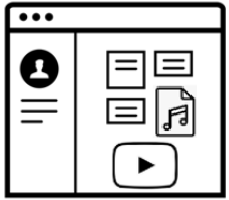

Nombre:
Los servicios web son una realidad gracias al protocolo , cuya versión segura se llama .
Ambos usan el protocolo de nivel de transporte -Elige- TCP UDP
Los puertos de escucha en el servidor para estos protocolos suelen ser y .
El servidor responde a los mensajes de petición del cliente con un código de estado (número + texto)... Nunca Si todo fue bien Si algo fue mal Siempre
 Figura 1
Figura 1
La página de la figura 1 tiene la hoja de estilos en un fichero CSS externo. ¿Cuántas peticiones realiza el navegador web del cliente para poder cargarla completamente?
Adjunta tu certificado en formato PDF:
Escribe aquí la contraseña proporcionada al comienzo: